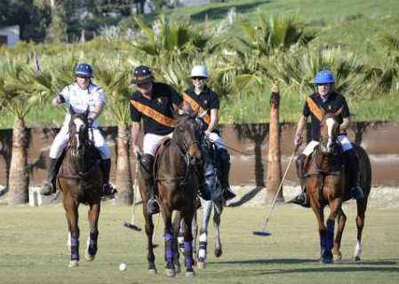

Overview of Horses: Everyday, At Work, In Sports & With a Regal Swag

Horses in the Wild 1!

Horse with man 2!

Merry-Go-Round....Horses! 3!

Clydesdale Horse and colt 4!

Horse Plowing 5!

Horse and wagon 6!
Quarter Horse at work 7!

Pony Express won the West 8!

Horses go to war 9!

Horses train to jump 10!
Rodeo Horses 11!

Polo ponies anyone 12!

Horse silhouette 13!

Royal Horses 14!

Horses running/trotting on tip toe 15!
Thoroughbreds racing 16!